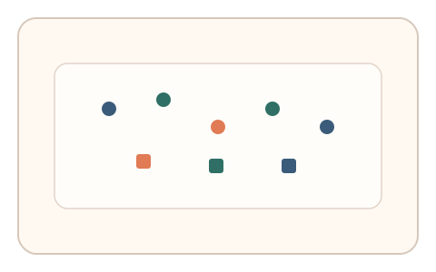
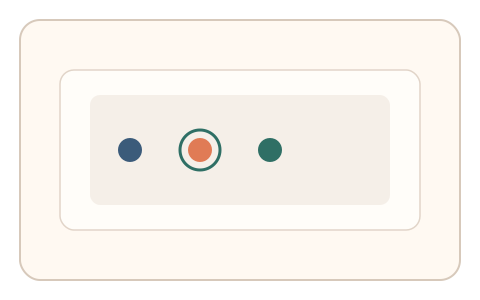
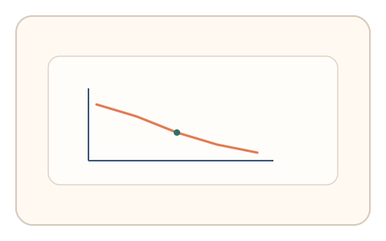

#37
视觉思考范式：时域/适应/残影
已扩展
瞬时阵列记忆
短时闪现图形阵列后遮罩，利用短时记忆容量与反应模式进行判定。
概念原文
50–200ms 快闪一组图形，随后遮罩，用户选择“刚才出现过的那个/出现的位置”。记录反应时与容量边界。
依赖视觉短时记忆容量与反应模式，而非准确率本身。
研究背景
视觉短时记忆容量有限，短暂呈现后对位置与形状的记忆呈现稳定上限。通过测量反应时与容量边界，可获得稳健的认知特征。
核心机制
- 50-200ms 闪现一组图形阵列。
- 立即遮罩并呈现选择题。
- 用户选择刚才出现的形状或位置。
- 记录反应时与容量边界。
用户流程
- 步骤 1：用户看到短暂闪现的阵列。
- 步骤 2：遮罩后选择出现过的元素。
- 步骤 3：系统统计反应与容量指标。
判定信号
容量边界与正确率曲线
人类短时记忆容量存在稳定上限。
反应时与不确定性分布
真实判断会呈现特定的犹豫与选择时序。
判定逻辑
拟合容量边界与反应时分布，要求落在人类范围；容量异常高或反应过快判异常。
对抗面
- 脚本直接记录闪现阵列并选择
- 重放真实用户的选择序列
防御与缓解
- 随机化阵列布局与元素组合
- 加入掩蔽噪声与短时干扰
- 叠加鼠标轨迹与微时序信号进行多信号判定
可达性与风险
提供更长呈现时间或替代任务，避免对短时记忆受限用户造成障碍。
- 快速闪现可能引起不适
- 屏幕刷新率限制呈现时间精度
可视化状态

状态 1：阵列闪现
元素阵列短时出现。

状态 2：遮罩选择
遮罩后选择出现过的元素。

状态 3：容量判定
分析容量边界与反应时。
参考资料
Short-term memory
说明短时记忆容量与时域限制。
Iconic memory
说明视觉暂留与快速呈现的基础。